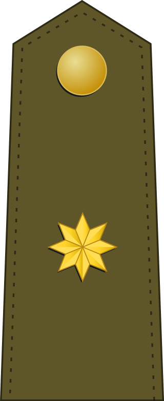

|

Special Forces MCOE
Ranks
- Ensing
- Lieutenant
- Captain
- Commander
- Lieutenant Colonel
- Colonel
- General
- Brigadier General
- Division General
- Lieutenant General
- Captain General


- 


|
The Joint Chief of Defense Staff (EMACON) is the auxiliary command body of the Chief of Defense Staff (JEMAD) in the exercise of its competencies and responsibilities. It will act as the main coordinator of the general activities of the Defense Staff (EMAD).
EMACON will support and advise the JEMAD in defining military strategy, military planning, force development, and the strategic conduct of operations. It will lead Military Planning within the framework of Defense Planning, in coordination with the authorities of the Ministry of Defense, the Armies, Navy, and other bodies of EMAD.
Additionally, EMACON will lead the processes of transforming the military capabilities of the Armed Forces (FAS). The Chief of the Joint Chief of Defense Staff (JEMACON) will hold the position of Chief of Military Transformation and will have a supporting element for this purpose.
EMACON will assist the JEMAD in undertaking necessary actions to ensure the operational effectiveness of the Armed Forces. It will identify, in coordination with the Armies and Navy, deficiencies in the Joint Force (FC) during its preparation and deployment process. It will analyze those deficiencies that could lead to the need for conceptual development or the creation or update of joint courses, or both simultaneously.
The Operations Command (MOPS) will serve as the entity responsible at its level for operational planning, leadership, and monitoring of military operations, both of a national nature and those multinational operations with Spanish participation, when Spain assumes leadership. It will also be responsible for directing the sustainment of non-permanent military operations.
The MOPS will provide advice to the Chief of Defense Staff (JEMAD) in strategic planning and operational leadership of operations. It will also advise the JEMAD, from an operational perspective, on the participation of Spanish forces in operations, monitoring their performance within the multinational operational chain. Similarly, it will provide operational advice on the participation of Spanish forces in joint-combined exercises that are not of national responsibility.
The MOPS will undertake the planning and leadership of designated exercises, formulate guidelines for the training and readiness of commanders and forces assigned to the operational structure, overseeing their preparation and evaluating their operational readiness to contribute to ensuring their operational effectiveness.
The Commander of the MOPS (CMOPS) will exercise command over forces under their authority in accordance with established plans and propose the activation of the Joint Multinational Headquarters (ES-OHQ) when designated to lead a European Union or other international organization for security and defense (OISD) operation.
It will coordinate the meteorological support needs of the Armed Forces, including those resulting from Spain's integration into OISD. To achieve this, it will adhere to the agreement between the Ministry of Defense and the State Meteorological Agency for providing meteorological support to the Armed Forces, published by resolution on January 2, 2020, from the Subsecretariat, or its subsequent updates.
Together with EMACON and JAE, the MOPS will coordinate the administration of resources allocated to finance the participation of the Armed Forces in peacekeeping and humanitarian aid operations assigned to EMAD, as well as other designated operations.
It will identify and report on unforeseen needs that may arise during the defense planning cycle, related to ongoing operations, and linked to force security and effectiveness.
The MOPS is structured into the Command, Second Command, Staff of the Operations Command (EMMOPS), Joint Special Operations Command (MCOE), Core of the Joint Multinational Headquarters (ES-OHQ), and the Security and Services Headquarters of Retamares (JESES-RETAMARES).
To support the CMOPS's missions, the Command will have a Secretariat (SEC-MOPS) and a Studies Unit (UE-MOPS).
Officers of liaison who must be accredited before the CMOPS, collaborating in operational tasks of representation and information exchange, will be assigned to the MOPS according to established terms.
The CMOPS will perform the functions of the Head of the Retamares Base.
Heraldic description: 'Azure, three swords argent. In fess, a chain of gold with seven links, where the even-positioned links are pierced by the swords. A bordure argent charged with six nails of the same metal and, in abysm, the motto "CUSTODIAE PACIS."
The swords represent the three branches of the military (Army, Navy, and Air Force), all of equal size and height to signify equal importance. The chain connecting the swords symbolizes the joint action of the three branches. The motto "Custodiae Pacis" means "(we are) the guardians of peace."
The Higher Center for National Defense Studies (CESEDEN), the primary joint military educational institution, will be responsible for planning and delivering courses on Advanced Studies in National Defense. It will also design the curricula and profiles for entry and exit from joint refinement courses, plan and deliver those determined, as well as plan, coordinate, and oversee joint courses offered at other military educational institutions in coordination with the Armies and Navy.
CESEDEN will promote cooperation, through relevant agreements, with other areas of the Administration and establish collaborations with universities, Defense University Centers, and other public and private entities. It will drive the development of agreements with these entities and universities that support the achievement of its objectives.
CESEDEN will be responsible for researching and promoting studies on topics related to Security, Defense, and Military History, contributing to the dissemination of Defense Culture. Additionally, it will promote the development and implementation of innovative processes and technologies that enhance military education and research in Security and Defense.
In the performance of its activities, CESEDEN will functionally depend on the Ministry of Defense Sub-Secretariat for matters related to military education and the General Secretariat of Defense Policy for matters related to the dissemination of Security and Defense Culture.
The Armed Forces Intelligence Center (CIFAS) will be the entity responsible for providing the Minister of Defense, through the Chief of Defense Staff (JEMAD), and the Department authorities with accurate military intelligence to alert about international situations capable of generating crises affecting National Defense. It will also provide necessary support within its scope for military operations.
The JEMAD will establish the conditions under which CIFAS will support the MOPS in determined military operations. Additionally, it will advise the JEMAD and the Chiefs of Staff of the Armies and Navy on military counterintelligence and security within the organic structure of the Armed Forces. Furthermore, it will contribute to advising the JEMAD at the strategic level of military operations. The Director of CIFAS will be the Head of Security within the EMAD.
CIFAS will direct and coordinate the use of joint intelligence, surveillance, and reconnaissance (ISR) systems, as well as coordinate with relevant authorities for the exploitation of information from specific ISR systems.
Through the JEMAD, it will provide the necessary intelligence to the Chiefs of Staff of the Armies and Navy for the development of Force preparation activities.
It will address requests for intelligence information from the Ministry of Defense authorities within its competencies.
In coordination with the MOPS, it will plan, direct, and, if necessary, execute actions related to geospatial information in the defense field for operations. For these purposes, the corresponding bodies of the Armies and Navy maintain a functional dependence on the Armed Forces Intelligence Center.
It will define, in collaboration with EMACON and MCCE, the operational requirements of Earth Observation Systems due to their impact on Image Intelligence.
The Joint Cyberspace Command (MCCE) will be the entity responsible for planning, directing, coordinating, controlling, and executing actions to ensure the freedom of action of the Armed Forces (FAS) in the cyberspace domain. To fulfill its mission, it will plan, direct, coordinate, control, and execute military operations in cyberspace in accordance with current operational plans. In the scope of these operations, it will take necessary actions to ensure the survival of physical, logical, and virtual elements critical to Defense and the FAS. Additionally, it will provide CIS support to the EMAD structure and be responsible for cipher teams and assigned crypto keys.
It will ensure the authority of the Chief of Defense Staff (JEMAD) over the Integral Defense Information Infrastructure (I3D) in the operational domain, in line with specific agreements between JEMAD and the Secretary of State for Defense. It will prioritize service provision to meet the operational needs of the FAS. The MCCE will collaborate in the digital transformation of the Ministry of Defense within the EMAD, in coordination and following the directives of the EMACON.
The MCCE will advise the JEMAD on all matters within its responsibility and represent the FAS in its competencies before international security and defense organizations (OISD), in coordination with agencies responsible for related areas.
It will support EMACON in the planning of capabilities within its responsibility. Furthermore, in collaboration with EMACON, it will define operational requirements, monitor the acquisition and sustainment of Cyber Defense means, joint Command and Control information systems (CIS), Electronic Warfare, Navigation and Identification, and Earth Observation Systems (in this case, also in collaboration with CIFAS), ensuring their interoperability and integration with those specific to the Armies, Navy, and OISD.
The MCCE will include the Ministry of Defense Computer Emergency Response Team (CERT), referred to as ESPDEF-CERT.
It will be responsible for defining, directing, and coordinating awareness, training, and joint training in cyberspace within its competencies, collaborating with relevant authorities. Additionally, it may propose joint training needs. Regarding education, it will keep the Human Resources Directorate (JRRHH) and CESEDEN informed.
It will contribute MCCE resources to the Joint, Intelligence, Surveillance, and Reconnaissance (JISR) process in collaboration with MOPS and CIFAS, within the framework of the Armed Forces Intelligence System and military operations.
The MCCE will be responsible for managing the electromagnetic spectrum assigned to the FAS and coordinating the orbit-electromagnetic spectrum resources of military satellites. It will conduct security audits on joint information and telecommunications systems of the Armed Forces and others assigned by the JEMAD.
The Commander of the Joint Cyberspace Command (CMCCE), as the representative of the Ministry of Defense in the National Cybersecurity Council, will keep the JEMAD informed of the discussions in this Council. It will maintain and encourage cooperation with the National Security Department, other national reference CERTs (National Institute of Cybersecurity and the National Cryptologic Center), and entities responsible for Cybersecurity and Cyber Intelligence, both nationally and internationally, the latter in coordination with EMACON.
The CMCCE will be responsible for the Information Security Area in the Information and Telecommunications Systems (SEGINFOSIT) of the Ministry of Defense, according to the competencies granted by current regulations on Information Security of the Ministry of Defense.